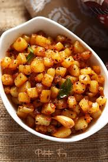

Potato Fry

Description
Potato fry is a basic and simple dish that can be made
easily. It neither needs efforts nor expertise. It can
be made by beginners with ease and is a safe haven for
people who are looking to begin their cooking muscle
and mettle. The dish at hand takes minimal time and
requires minimal skill to make it look and taste good.
It will be a great way to start learning cooking and to
start eating healthy.
The recipe is simple to achieve as it is pretty straight
forward. It required little preparation compared to the
many other recipes out there. The potato fry has a high
amount of carbs, which is perfect if paired with Yogurt
rice or lentil soup. It can also be paired with Okra Fry.
You can find the recipes for the both on the home page.
Ingredients
- Fresh Potatoes (500gms, 1kg, or 2kg pack from Tesco, Lidl, or Sainsbury)
- Cooking oil of your choice (olive, sesame, vegetable or rapeseed)
- A cooking pot (stainless steel or nonstick)
- Finger chillies or peppers of your choice and tolerance level
- Salt
- A hob or a cooking stove
- cumin powder or seeds
- Turmeric powder
- A Spatula
Steps
- Wash the potatoes and chop them into small pieces. The smaller the piece, the faster the cooking time
- Take your frying pan and place it on the hob or the stove after turning on the stove
- Set the hot power to 6 and the stove to medium high.
- Let the pan heat for a couple of mins (3-4 mins)
- Based on the amount of Potato's that are being fried (not to completely submerge the pieces, but just enough to form a layer at the base), add the oil of your choice proportionately
- Let the oil heat up for a while (3-4 mins)
- Now add the chopped potatoes into the heated oil pan.
- Leave it for 8-10 mins after placing a lid on top of the pan
- Using the Spatula, mix the potatoes so that the ones at the bottom come up, and the ones at the top go to the bottom
- For the next 10 mins, keep repeating the above step for every 2 mins
- After the duration is over, add cumin seeds/powder and turmeric powder to the pan and mix thoroughly
- After 5 more mins, check if the pieces are soft and tasty, if yes, then add salt and let it heat up for more mins. Mix thoroughly after adding salt
- Now, Add the chopped peppers to the fray along with salt.
- After the time is done, taste a piece and then see what's missing and add
- That's it, your potato fry is ready to be served.
A few more tips would be as follows
- Serve it hot, it tastes best when served hot
- Try eating with multiple things like rice, naan, roti, etc..
That's all enjoy your dish!!
Home